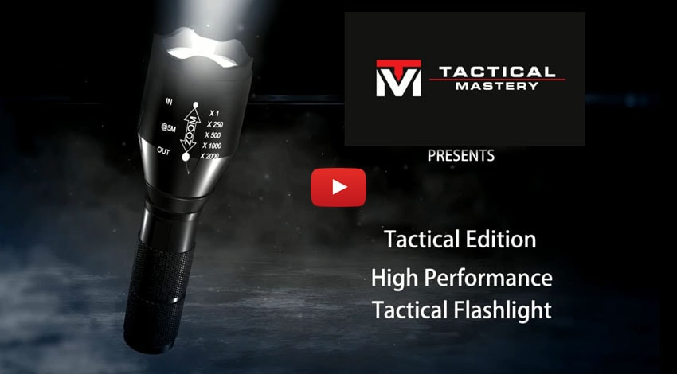

With Domestic Terrorism on the Rise, how Will You Protect Yourself and Your Family?
Real Americans – Police officers, Firefighters, Ex-military, and Survivalists, and now YOU – choose the Tactical Mastery Flashlight. Available for a limited time at 75% off available online or by phone 855-880-SAFE (7233).
Tactical flashlights like the Tactical Mastery Flashlight are a go-to tool for U.S. Navy SEALs, Coast Guardsmen, firefighters, policemen, U.S. Search and Rescue teams – and now citizens like you.
Why?
Domestic terrorists are the biggest terror threat to Americans in the world. With new incidents making the news practically every day and gun laws getting more restrictive, citizens are looking for safe, affordable, and easy ways to defend themselves.
What's the solution?
A flashlight! But not just any flashlight will do: you need the Tactical Mastery Flashlight Military Grade Flashlight from Tactical Mastery. Newly released to the public, it’s already going viral, finding a dedicated and enthusiastic audience of users online.
The Tactical Mastery Flashlight:
- Can be seen from up to 2 miles away with its extraordinarily bright, 800 lumens lamp
- Is less than 6 inches long, compact, and lightweight, making it easy to take anywhere
- Is built from military-grade aluminum, so it’s built to last
- Runs for hours on just 3 AAA batteries
Tactical Flashlights are go-to tools for police officers, active military, Navy SEALs, firefighters, and the Coast Guard, among MANY others.
How Effective Are Tactical Flashlights?
Remember the last time someone took your picture with the flash on and it temporarily blinded you? Imagine something hundreds of times brighter flashing repeatedly in your eyes. You wouldn’t just be blinded – you’d be running in the opposite direction as fast as you can, trying to make that flashing effect go away. The Tactical Mastery Flashlight is so bright that it can temporarily blind someone. Be careful!
People Underestimate The Power Of Flashlights.
Having a reliable, easy-to-use flashlight – one that’s extremely bright and with almost endless battery life – can be a lifesaver in countless situations:
- Late night walks alone – protect yourself from potential attackers!
- Car breakdowns on roads and highways – make sure drivers see you!
- Power outages – move around safely in ANY space!
- Camping – light up your surroundings and deter wild animals!
- Emergencies of all kinds!
Survival professionals know that being unprepared can literally be the difference between life and death, so be prepared with the tools the experts swear by!
Preparedness is more important than ever. With a flashlight in your car, on your nightstand, in your camping gear, or even just in your coat pocket, protective light is always within reach.
These tactical flashlights are selling for 75% off their normal price!
OUR REVIEW:
Tactical flashlights like the Tactical Mastery Flashlight are a go-to tool for U.S. Navy SEALs, Coast Guardsmen, firefighters, policemen, U.S. Search and Rescue teams – and now citizens like you.
We got the Tactical Mastery Flashlight from Tactical Mastery, and one thing was clear: this thing is serious. It arrives in a protective case like a handgun’s and it’s compact, sleek, and VERY easy to use.
We put the batteries in and within seconds we knew that this was the brightest flashlight we’d ever used. With the strobe light on, we could only look at it for about 5 seconds – it was so disorienting!
In just a few minutes, it was obvious why so many people are choosing the Tactical Mastery Flashlight. You can – and should – take it with you everywhere.
You do NOT want to be on the receiving end of this light!
Make sure you and your loved ones are always ready for the worst. Get a head start on everything with the Tactical Mastery Flashlight at a deep discount, and upgrade to a Tactical Kit – including chargers, batteries, and more – for 75% off retail as well!
CLICK HERE TO CHECK AVAILABILITY OR CALL US RIGHT NOW AT 855-880-SAFE (7233) TO GET YOURS TODAY.